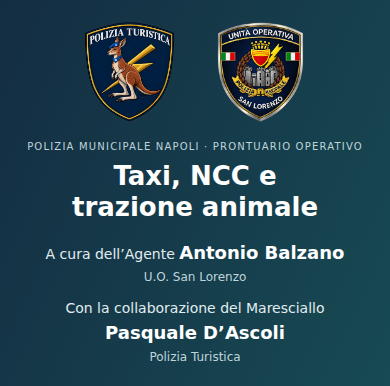
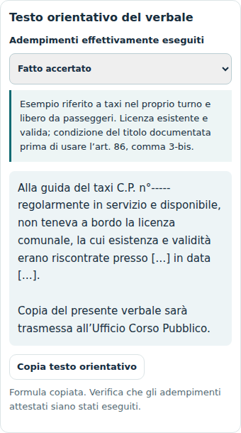
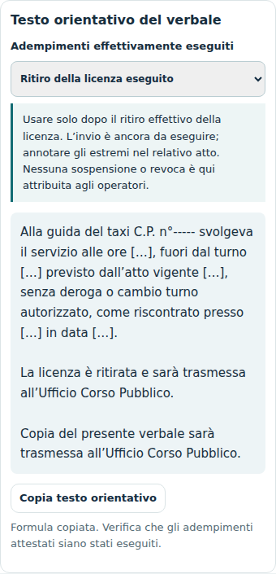
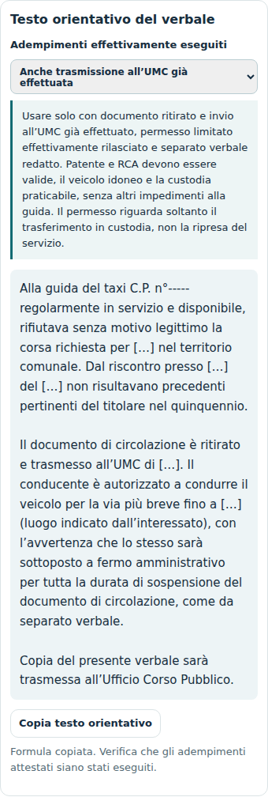
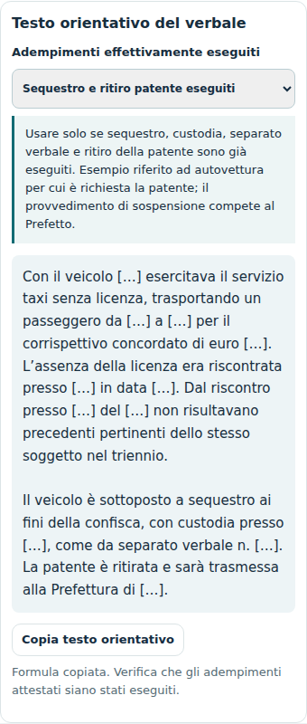
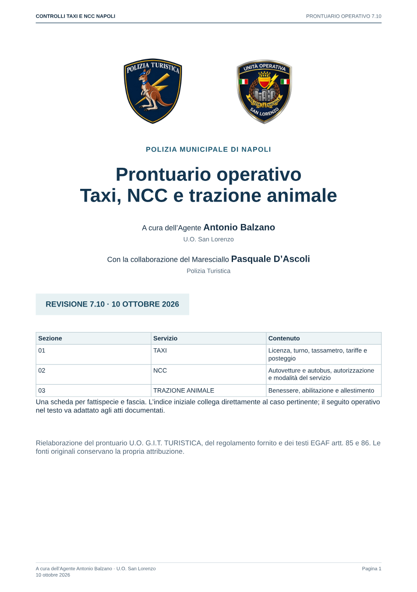

Quattro esempi di revisione operativa
PWA 1.8.8 / PDF completo 7.10 · 15 ottobre 2026. Nuova struttura limitata ai quattro esempi, in attesa della valutazione dell’autore.
Indicazione interna da confermare. Il ritiro della licenza per C.A.P./patente/RCA e il termine generale di cinque giorni per inviarla richiedono la disposizione del Comando. La valutazione della struttura non dimostra questi obblighi. Il ritiro previsto per i gruppi C/D è distinto dai successivi provvedimenti dell’autorità competente.
Due stemmi e crediti

G19 · Caso ordinario
Licenza non a bordo, ma esistente e valida. Nessun ritiro automatico della licenza. Apertura riferita al taxi nel turno e disponibile.




G23 · Ritiro della licenza
Servizio fuori turno: apertura adattata, senza «regolarmente in servizio». Formula completa soltanto dopo il ritiro effettivo.




G03-01 · Documento di circolazione
Rifiuto della corsa, prima violazione. La variante qui mostrata richiede ritiro, invio UMC, permesso e separato verbale già eseguiti. Sono disponibili anche invio futuro e trasferimento senza autorizzazione alla guida.




G01 · Caso abusivo
Nessuna apertura del taxi regolare e nessuna chiusura generica al Corso Pubblico. Variante completa con sequestro, custodia e ritiro patente effettivi, senza permesso automatico ex art. 217.




Copertina del PDF completo

Catalogo, importi, punti e formule delle 187 schede conservati. Vecchio box e nuova struttura modificati solo nei quattro esempi. Controlli degli esempi · Controlli PWA e offline. Pubblicazione autorizzata dello stato attuale. La struttura resta una proposta limitata ai quattro esempi.